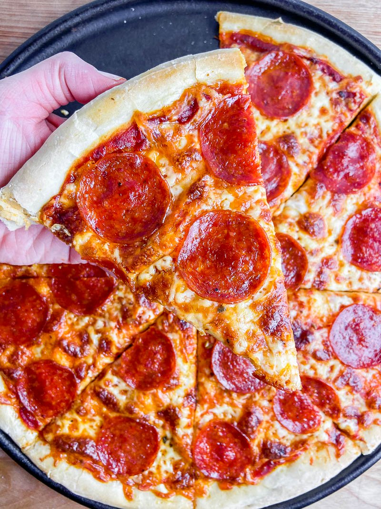

Homemade Pizza

Description
Who doesn't love pizza, especially one that fills your house up with anticipation for the whole day?
Ingredients
- Pizza dough (premade)
- Flour, 1 cup
- Tomato Paste, half a cup
- Pepperoni,lots
- Ham, lots
- Cheese, double lots, pizza blend
- Few balls of Bocconcini
- Truffle oil (1 tsp)
- Basil
Method
- Raise your dough according to the packet recipe (we're not Gordon Ramsey here).
- Crank the oven up to 200C fan forced.
- Flour your benchtop, kneed that dough and roll it out with a rolling pin or wine bottle.
- Chuck the dough on a pizza-safe oven tray.
- Spread the tomato paste nice and evenly over the top, getting to the edge if possible.
- Throw on 1/2 of the pizza blend cheese as a base.
- Toss on your ham and pepperoni, covering with the rest of the cheese.
- A light sprinkle of truffle oil will really make this pop.
- Bake in the oven for 15 minutes or until golden brown. Serve and enjoy!